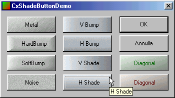

With this class you can easily give a professional look to your buttons in
few steps.
No resource is needed: all bitmaps are generated runtime.
Code parts come from the CxSkinButton
article.
CxShadeButton. If the Class Wizard doesn't show the CxShadeButton
type, select CButton and then edit the code manually.CxShadeButton methods:
BOOL CxShadeButtonDemoDlg::OnInitDialog()
{
// ...
m_btn1.SetTextColor(RGB(255,0,0));
m_btn1.SetToolTipText("Button1");
m_btn1.SetShade(SHS_DIAGSHADE,8,10,5,RGB(55,255,55));
// ...
The SetTextColor and SetToolTipText are optional and self explaining;
SetShade is:
void CxShadeButton::SetShade(UINT shadeID=0,BYTE
granularity=8,BYTE highlight=10,BYTE coloring=0,COLORREF color=0)
shadeID = can be one of these effects:SHS_NOISE = 0
SHS_DIAGSHADE = 1
SHS_HSHADE = 2
SHS_VSHADE = 3
SHS_HBUMP = 4
SHS_VBUMP = 5
SHS_SOFTBUMP =6
SHS_HARDBUMP = 7
SHS_METAL = 8
granularity = this parameter add an uniform noise to the
button bitmaps. A good value is from 5 to 20; 0 to disable the effect. The noise
has a positive effect because it hides the palette steps.
highlight = sets the highlight level when the mouse is
over the button. A good value is from 5 to 20; 0 to disable the effect.
coloring = sets the percentage of color to
blend in the button palette. The value can range from 0 to 100; 0 to disable the
effect.
color = if coloring is greater than zero,
color is mixed with the standard button colors. coloring and color parameter should be used
carefully to guarantee a good aspect in all the situations.
basic implementation and interface.
For any questions, e-mail to: ing.davide.pizzolato@libero.it
Thanks to all the Code Project developers!
Special thanks to:
Milan Gardian for mouse and keyboard tracking code.